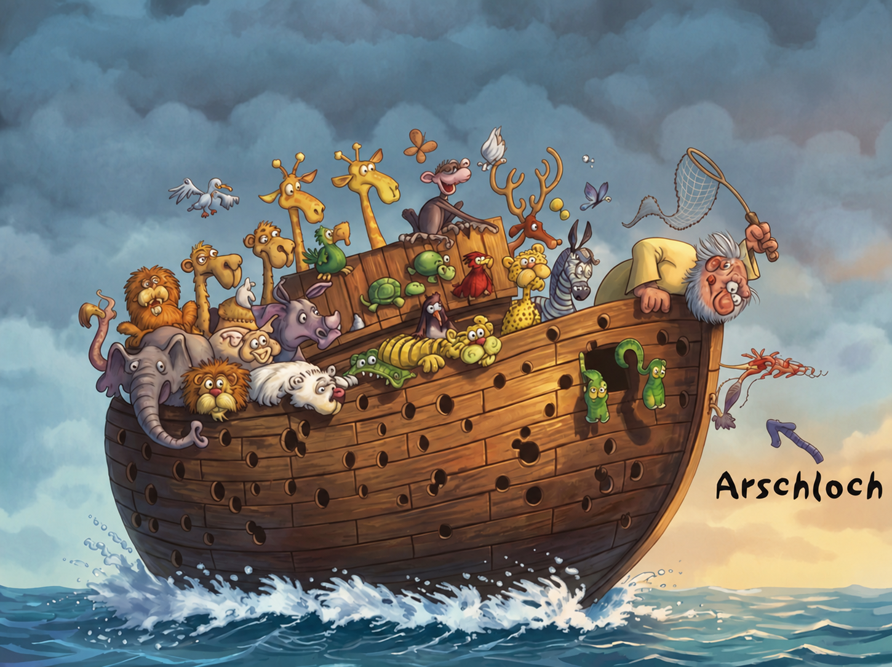

Der neue 5-Euro-Schein – Entwurf durchgesickert
Ziel der neuen Euro-Noten ist es, die Errungenschaften der EU für ihre Bürger entsprechend zu würdigen.
Ansehen →Durchklicken oder gezielt wiederfinden. Jedes Motiv behält seinen eigenen Link.
Zum neuesten Bild →Ziel der neuen Euro-Noten ist es, die Errungenschaften der EU für ihre Bürger entsprechend zu würdigen.
Ansehen →

Mehr muss man dazu nicht wissen.
Ansehen →
... es gibt immer ein Arschloch.
Ansehen →
Der Nachlass ist größer als gedacht. Nur das Vorzeichen wurde politisch gelöst.
Ansehen →
Auch privat werden Koalitionen jetzt schwieriger.
Ansehen →